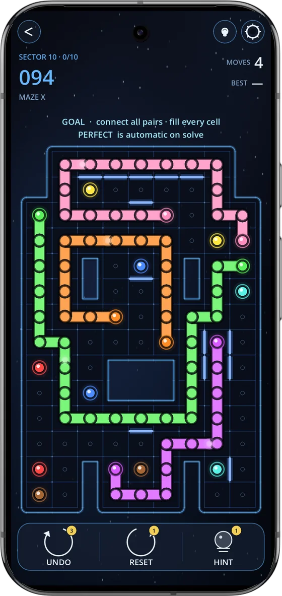
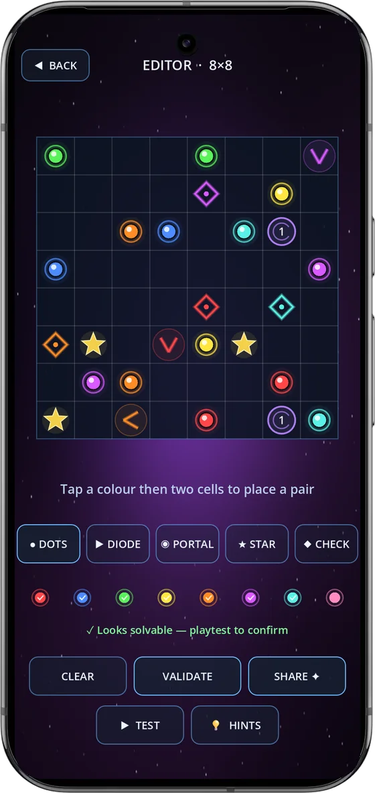

Circuit Trace launched in October with 500 puzzles. Version 1.9.8 is the biggest update since: a new pack, a rebuilt difficulty curve across the whole game, and a Creator that can do everything the campaign can. Here's what changed and why.
New: Labyrinth
Every board in Circuit Trace used to be a square. Labyrinth changes that. Its 100 levels sit on shaped boards (rings, towers, castles, fortresses) with holes in the middle that your lines have to go around, and thin glowing walls between cells that no line can cross.
It starts at 5×5 and grows to 9×14 boards in the final sector. Every level has exactly one solution, and the walls are what make that true: wherever a board could be solved two ways, a wall closes the shortcut. Labyrinth is free, under GAME MODES.


Puzzles that make you think
During testing we hit an uncomfortable truth: many late levels looked hard but could be read at a glance. Each colour's dots sat close together, and big boards turned into lots of small, obvious puzzles side by side.
So we built a solver that plays the way people do. It first makes the moves anyone would see, then tries "what if this goes left?", and only guesses as a last resort. Every step of real thinking raises a level's score. With that score we rebuilt Classic, Diodes, Portals and Arcade, gave the main campaign 86 new boards (the tutorials stayed as they were), and made Daily, Weekly, Endless and Time Trial rate their puzzles before you see them.
"The computer does the measuring. We decide what's fun."
The full story, including a correction to our own "500 handcrafted puzzles" claim, is on the Circuit Trace blog: Why our puzzles got harder.
The Creator, fully unlocked
The Puzzle Editor started with dots and diodes. It now has every piece the campaign uses: one-way diodes, portals, stars and checkpoints, up to eight colours on an 8×8 board. You name your puzzle, share it as a short code, or publish it to the Community, where everyone can play it, like it and see how often it's been solved.
Smaller things
- Endless MASTER is now a 7×7 board with five colours, and every Endless puzzle is rated before you get it.
- A level in the middle of sector 7 that had quietly stayed a tiny 5×5 is now a proper 8×8 board.
- The "NEW" label in the game modes menu now shows in your own language.
🧩 Already finished the game?
The level numbers are the same, but most boards behind them are new. If you perfected Circuit Trace before this update, it's worth another run, starting with the last two sectors of the campaign.
🧩 Play the update
600+ puzzles across 6 level packs, including the new Labyrinth. Free on Google Play, with an optional €3.99 Remove Ads.